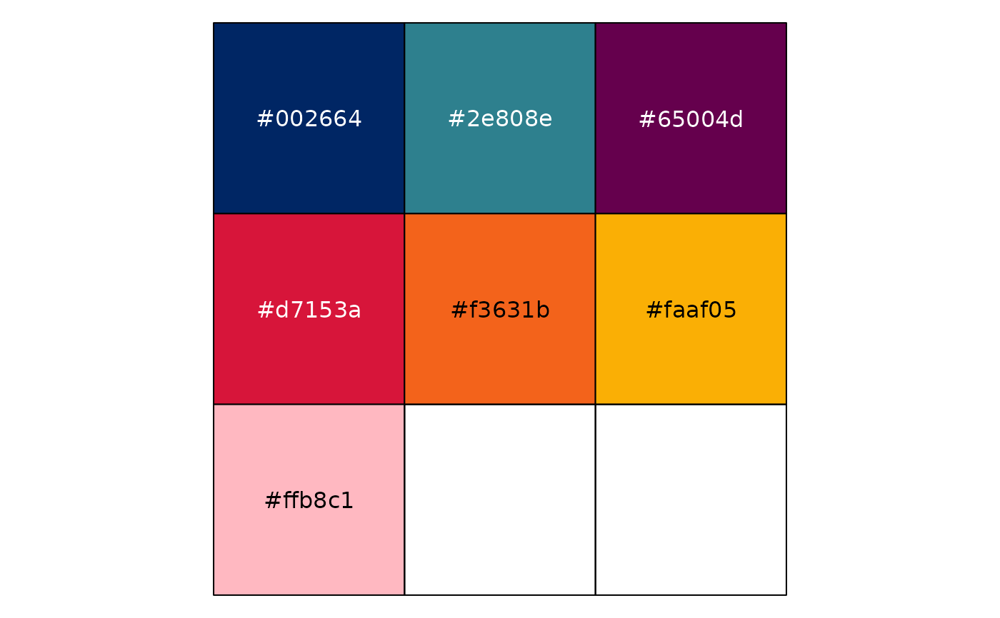
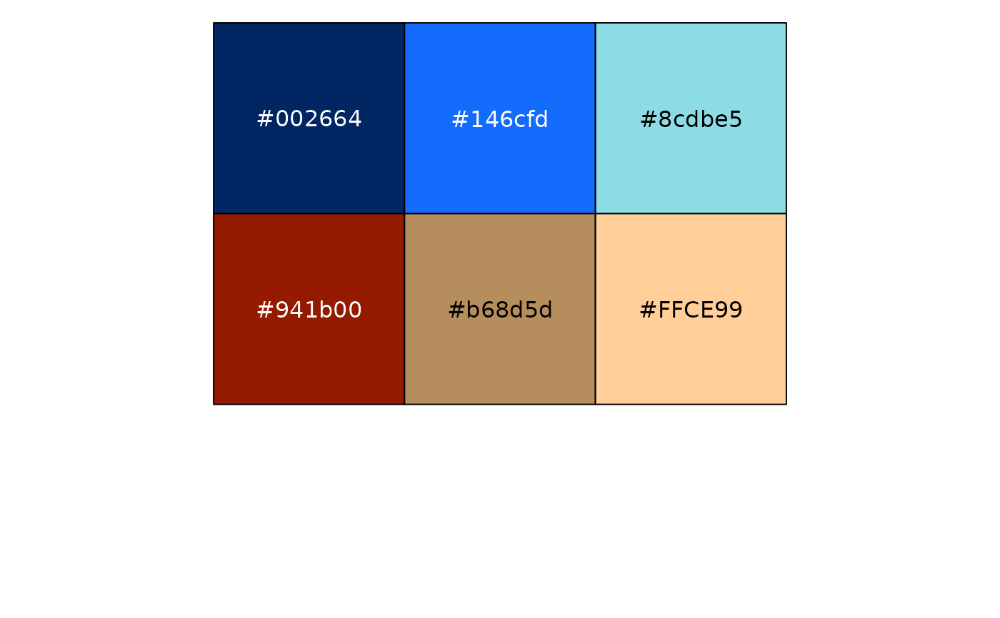

Palettes created using the waratah anchor colours.
Note that the palettes used in plots interpolate between the anchor colours,
allowing each palette to be used with any number of colours (within reason!)
Usage
pal_waratah(palette = "default", direction = 1)
Arguments
- palette
Name of the palette: default, brand_default, neg_to_pos, greens, teals, blues, purples, fuchsias, reds, oranges, yellows, greys, browns, deeps, lights, warm_colours, cool_colours, colour_blind
- direction
Set to -1 to reverse the order of colours in the palette,
or 1 for the original order.
Examples
library(scales)
show_col(pal_waratah()(8))
#> Warning: At most 7 colours are supported by the "default" palette

show_col(pal_waratah("colour_blind")(6))
